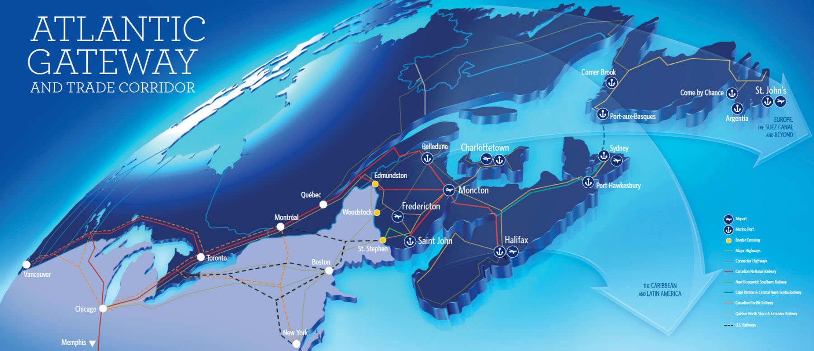

Port Agency
Port call attendance, coordination with local stakeholders and vessel documentation support.
Ask about port agencyLocal expertise and hands-on coordination for vessels calling at ports throughout Atlantic Canada.
Atship Services Ltd. is a Canadian marine agency with roots in Atlantic Canada dating back to 1994. We support shipowners, operators and their vessels with practical, attentive agency and logistics services.
From routine port calls to specialized requirements, our focus is straightforward: clear communication, local knowledge and hands-on coordination.
Discover AtshipDependable marine services shaped around each vessel, call and operational requirement.
Port call attendance, coordination with local stakeholders and vessel documentation support.
Ask about port agencyCrew attendance, ground transportation and vessel support services arranged with care.
Ask about vessel supportLogistical assistance for repairs, special project cargo, heavy lifts and other marine requirements.
Ask about logisticsFounded in 1994, Atship Services has grown as a partner to the marine industry, combining operational experience with a personal approach to every assignment.
Our team understands that each port call comes with its own schedule, documentation and coordination needs. We are here to help make those moving parts easier to manage.
Three offices in Nova Scotia, supporting port calls across Atlantic Canada.
Discuss your vessel’s port call with our operations team. We can confirm the services and arrangements needed for your specific assignment.

Planning a vessel call, arranging logistics or looking for agency support? Get in touch with our operations team.